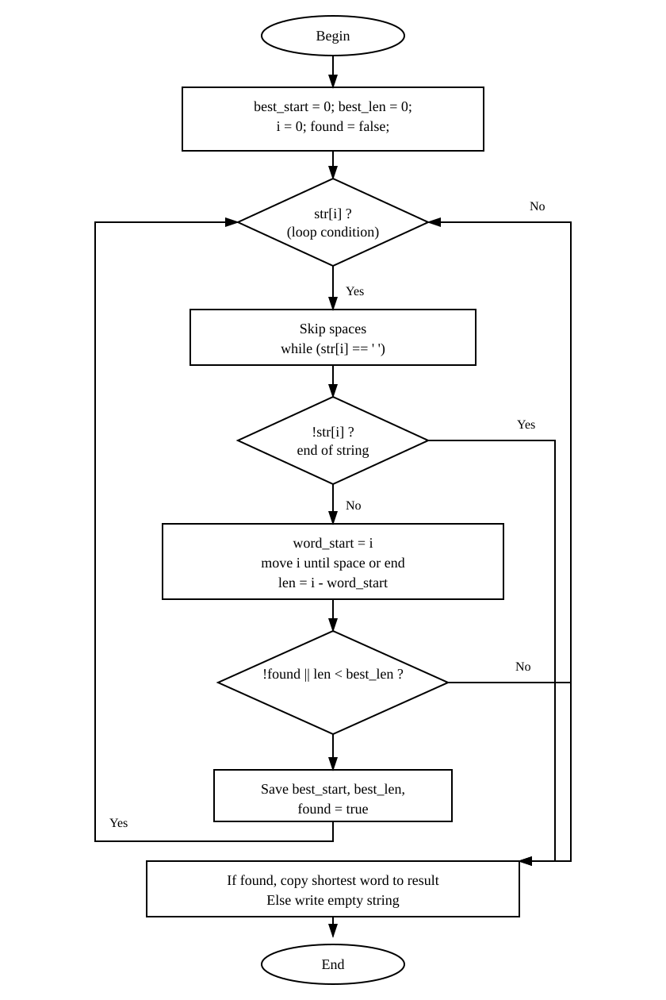
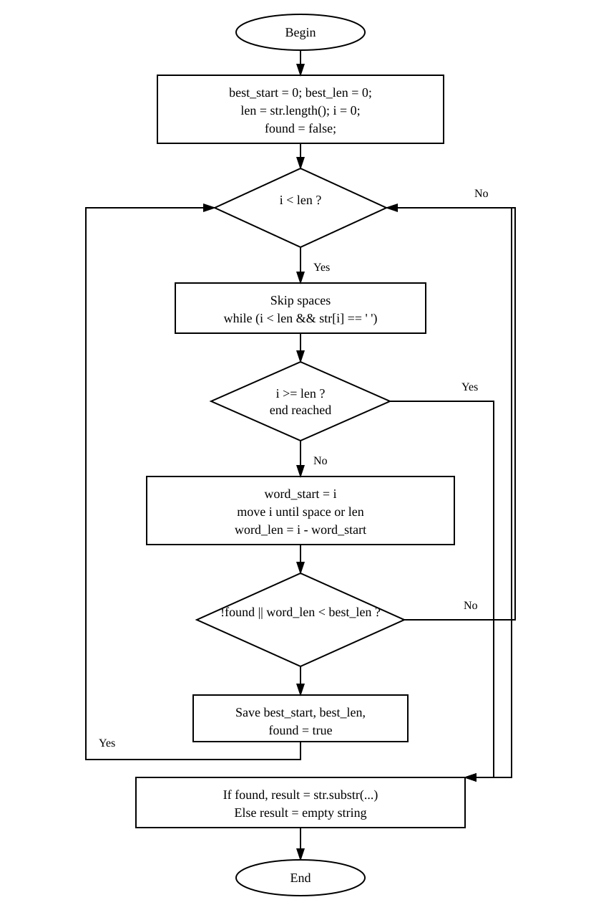
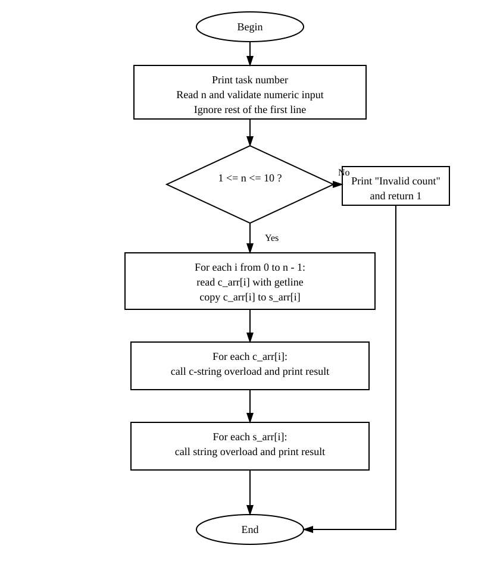

TRANSPORT AND TELECOMMUNICATION INSTITUTE
ENGINEERING FACULTY
Laboratory work N1 (2nd semester)
Course: Programming
Theme: User-defined functions
Student: Igors Oļeiņikovs
Student code: 93642
Group: 4501BTA
Riga 2026
Create an algorithm for the function according to the individual task. Create in C++ two overloaded functions in one source file: the first function must process one c-string passed by pointer, the second function must process one value of type string passed by reference. If returning a value is required, it may be returned through the return operator or through output parameters. Parameters that are not changed must be declared as const. In main, create a two-dimensional array of chars that stores c-strings entered by the user and create a second array that stores the same values as objects of type string. Call the appropriate function for every string in each array and print the result. All input and output must be implemented only in main. Print the individual task number in the beginning of the program, test the application, and prepare a report.
Individual task number is calculated as 93642 % 25 = 17.
Task 17: Function returns the shortest word in the string. Words are considered to be separated by one space. If there are several shortest words, the function may return any of them.
Fig. 1. Block diagram of function shortestWord(const char *str, char *result).

Fig. 2. Block diagram of function shortestWord(const string &str, string &result).

Fig. 3. Block diagram of function main().

The block diagrams were prepared as vector figures and the editable source file is stored in LAB2_1.drawio.
The program contains two overloaded functions with the same name shortestWord. Both functions solve the same task but work with different string representations. The first overload processes a c-string and writes the answer to an output character array. The second overload processes an object of type string and writes the answer to an output object of type string.
For the c-string overload, the algorithm scans the source string from left to right. Spaces are skipped first. After that, the current word beginning is saved, the index moves to the end of the word, and the word length is calculated. If the current word is the first found word or is shorter than the previously saved shortest word, its position and length are stored. After the scan is finished, the shortest word is copied to the result array and terminated with the null character.
For the string overload, the same logic is used, but lengths and positions are applied to the string object. After the shortest word is found, the answer is formed with the method substr.
The main function performs all user interaction. It prints the task number, reads the number of strings, validates that the value is numeric and belongs to the allowed range from 1 to 10, and removes the rest of the first input line from the stream. After that, it fills a two-dimensional character array with user-entered c-strings and creates a second array of objects of type string by copying values from the first array. Then main separately calls the c-string version for every element of the first array and the string version for every element of the second array. The result of each call is printed on the screen. If line input fails, the program prints an error message and terminates.
The solution satisfies the task restrictions: c-strings are not converted to string in the c-string overload, string values are not converted to c-strings in the string overload, all input and output are done only in main, and STL algorithms from the header <algorithm> are not used.
/*****************************************************************************/
/* */
/* main.cpp TTTTTTTT SSSSSSS II */
/* TT SS II */
/* By: st93642@students.tsi.lv TT SSSSSSS II */
/* TT SS II */
/* Created: Apr 09 2026 12:00 st93642 TT SSSSSSS II */
/* Updated: Apr 09 2026 12:00 st93642 */
/* */
/* Transport and Telecommunication Institute - Riga, Latvia */
/* https://tsi.lv */
/*****************************************************************************/
#include <iostream>
#include <limits>
#include <string>
void shortestWord(const char *str, char *result)
{
size_t best_start = 0;
size_t best_len = 0;
size_t i = 0;
bool found = false;
while (str[i])
{
while (str[i] == ' ')
i++;
if (!str[i])
break;
size_t word_start = i;
while (str[i] && str[i] != ' ')
i++;
size_t len = i - word_start;
if (!found || len < best_len)
{
best_start = word_start;
best_len = len;
found = true;
}
}
if (found)
{
for (size_t j = 0; j < best_len; j++)
result[j] = str[best_start + j];
result[best_len] = '\0';
}
else
*result = '\0';
}
void shortestWord(const std::string &str, std::string &result)
{
size_t best_start = 0;
size_t best_len = 0;
size_t len = str.length();
size_t i = 0;
bool found = false;
while (i < len)
{
while (i < len && str[i] == ' ')
i++;
if (i >= len)
break;
size_t word_start = i;
while (i < len && str[i] != ' ')
i++;
size_t word_len = i - word_start;
if (!found || word_len < best_len)
{
best_len = word_len;
best_start = word_start;
found = true;
}
}
if (found)
result = str.substr(best_start, best_len);
else
result = "";
}
int main(void)
{
const int MAX_STRINGS = 10;
const int MAX_LEN = 256;
char c_arr[MAX_STRINGS][MAX_LEN];
std::string s_arr[MAX_STRINGS];
char result_c[MAX_LEN];
std::string result_s;
int n;
int i;
std::cout << "Task Nr " << 93642 % 25 << std::endl;
std::cout << "Enter number of strings: ";
if (!(std::cin >> n))
{
std::cout << "Invalid count" << std::endl;
return (1);
}
std::cin.ignore(std::numeric_limits<std::streamsize>::max(), '\n');
if (n <= 0 || n > MAX_STRINGS)
{
std::cout << "Invalid count" << std::endl;
return (1);
}
i = 0;
while (i < n)
{
std::cout << "Enter string " << i + 1 << ": ";
if (!std::cin.getline(c_arr[i], MAX_LEN))
{
std::cout << "Invalid input" << std::endl;
return (1);
}
s_arr[i] = c_arr[i];
i++;
}
std::cout << std::endl << "Results (c-string version):" << std::endl;
i = 0;
while (i < n)
{
shortestWord(c_arr[i], result_c);
std::cout << "\"" << c_arr[i] << "\" -> \""
9
n = abc
The program must reject non-numeric count input and print "Invalid count".
The program prints "Invalid count".
Pass
10
n = 11
The program must reject count outside the allowed range and print "Invalid count".
The program prints "Invalid count".
Pass
<< result_c << "\"" << std::endl;
i++;
}
During this laboratory work, two overloaded user-defined functions were created to solve one task for two different string representations: c-strings and objects of type string. The program correctly determines the shortest word in every entered string and prints identical results for both overloads. The solution follows the requirements of the task, uses const parameters where applicable, avoids forbidden conversions between string types, and keeps all user interaction inside main. Additional validation was added for incorrect count input and line input failures. Testing confirmed correct operation for single words, several words, several input strings, cases with equal shortest word lengths, and invalid count input.
std::cout << std::endl << "Results (string version):" << std::endl;
i = 0;
while (i < n)
{
shortestWord(s_arr[i], result_s);
std::cout << "\"" << s_arr[i] << "\" -> \""
<< result_s << "\"" << std::endl;
i++;
}
return (0);
}
Task Nr 17 Enter number of strings: 3 Enter string 1: The quick brown fox Enter string 2: I am a programmer Enter string 3: single Results (c-string version): "The quick brown fox" -> "The" "I am a programmer" -> "I" "single" -> "single" Results (string version): "The quick brown fox" -> "The" "I am a programmer" -> "I" "single" -> "single"
| No. | Input data | Expected result | Actual result | Conclusion |
|---|---|---|---|---|
| 1 | n = 1 hello world a test |
Shortest word is "a" for both overloads. | The program outputs "a" for both overloads. | Pass |
| 2 | n = 1 hello |
Shortest word is "hello" for both overloads. | The program outputs "hello" for both overloads. | Pass |
| 3 | n = 1 abc def ghi |
Any 3-letter word may be returned. The implementation returns the first one: "abc". | The program outputs "abc" for both overloads. | Pass |
| 4 | n = 2 The quick brown fox I am a programmer |
For the first string, shortest word is "The". For the second string, shortest word is "I". | The program outputs "The" and "I" for both overloads. | Pass |
| 5 | n = 1 hello I world |
Shortest word is "I" for both overloads. | The program outputs "I" for both overloads. | Pass |
| 6 | n = 1 hello is world |
Shortest word is "is" for both overloads. | The program outputs "is" for both overloads. | Pass |
| 7 | n = 1 hello world a |
Shortest word is "a" for both overloads. | The program outputs "a" for both overloads. | Pass |
| 8 | n = 1 I love programming |
Shortest word is "I" for both overloads. | The program outputs "I" for both overloads. | Pass |
During this laboratory work, two overloaded user-defined functions were created to solve one task for two different string representations: c-strings and objects of type string. The program correctly determines the shortest word in every entered string and prints identical results for both overloads. The solution follows the requirements of the task, uses const parameters where applicable, avoids forbidden conversions between string types, and keeps all user interaction inside main. Testing confirmed correct operation for single words, several words, several input strings, and cases with equal shortest word lengths.